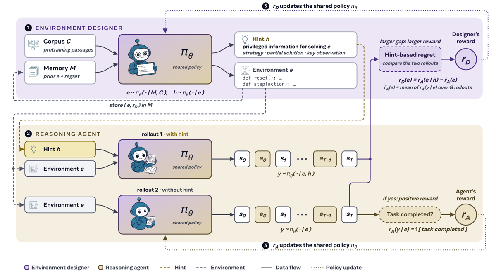
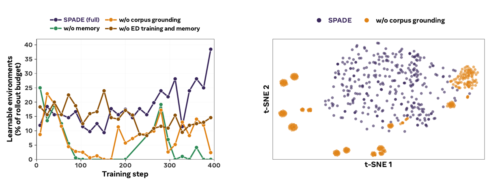
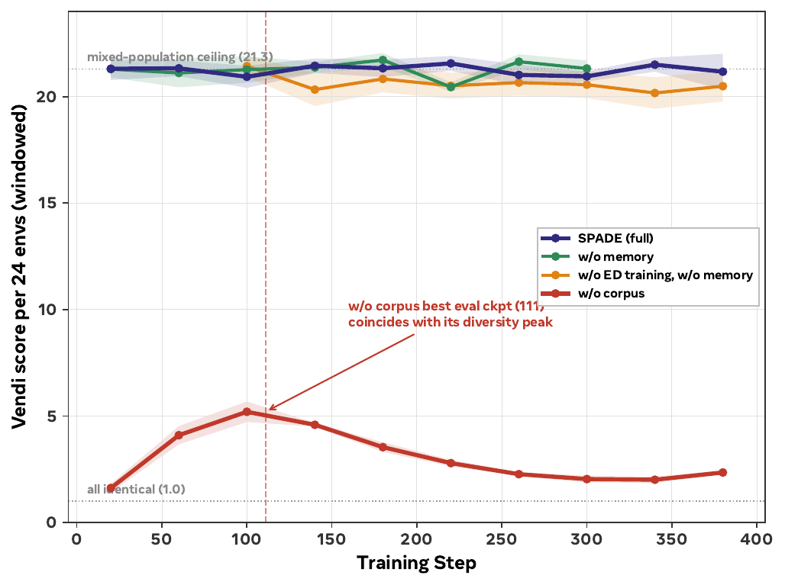

⚠️ Sur la traction : à 1 mois d'existence, 4,0 citations/mois est du bruit — c'est une moyenne sur un seul mois, dominée par les pré-prints qui citent avant relecture, et 0 citation influente ne distingue pas encore « ignoré » de « trop récent ». Ne rien conclure de ce chiffre avant ~6 mois ; c'est la raison principale du passage de A à B, pas un jugement sur le contenu.
Convention de citation. Les numéros de figures/tables du PDF compilé n'étant pas vérifiables depuis la source, je cite les figures par leur label (= nom de fichier dans
figs/) et les tables par leur titre, avec la section. Sections du papier : §1 Intro, §2 Related, §3 Prelim, §4 Méthode (4.1 dual-role, 4.2 hint-regret, 4.3 env design), §5 Setup (5.1 recette, 5.2 games, 5.3 tool use), §6 Résultats, §7 Ablations, §8 Scaling, §9 Discussion. Annexes : A Notation, B Théorie, C Méthode & expériences (C.1 prompts, C.2 implémentation, C.3 repro), D Ablations étendues, E Related étendu, F Quantitatif étendu, G Qualitatif étendu (G.3 galerie de code).
TL;DR — Un seul LLM joue deux rôles entraînés conjointement par GRPO : un Environment Designer (ED) qui écrit des MDP complets en Python (interface Gym reset()/step(), transitions, reward et code de vérification inclus) conditionné sur un document de corpus de pré-entraînement + une mémoire d'environnements passés, et un Reasoning Agent (RA) qui y agit ; l'ED est récompensé par le regret estimé par hint = écart de retour du RA avec vs sans un indice privilégié.
Claim principal (précis) — Sur Qwen3-30B-A3B-Instruct-2507, en setting « games », SPADE atteint 58.3 de moyenne sur 8 benchmarks held-out (AIME'25/26, GPQA-D, LCB-v6, 4 catégories Reasoning-Gym hard), soit +8.1 vs base et +5.3 vs la meilleure baseline à environnements fixes (Fixed-env RLVE, 53.0), à budget d'entraînement apparié (400 itérations, même checkpoint de départ) [§6.1, Tab. « games »]. En setting tool-use, le même pipeline donne +5.7 sur BFCL v4 multi-turn et +13.9 sur ACEBench-Agent — mais ces deux derniers chiffres sont vs le modèle de base, pas vs une baseline RL appariée (il n'y en a aucune en tool-use) [§6.1, Tab. « tooluse »].
⚠️ L'abstract juxtapose « +5.3 over the strongest fixed-environment baseline » et « +5.7 / +13.9 » sans signaler ce changement de référence. Le +5.3 est de plus le chiffre 30B uniquement : la marge sur RLVE tombe à +1.6 à 4B (44.1 vs 42.5) et +1.7 à 8B (55.5 vs 53.8), et RLVE bat SPADE sur AIME'25 et AIME'26 à ces deux échelles [Tab. « games »].
Origine des tâches — 100 % générées par le modèle lui-même (rôle ED), à chaque round, en ligne. Aucune tâche humaine, aucune tâche minée, aucun jeu de seed curé. Le seul intrant externe est un document de corpus de pré-entraînement ré-échantillonné à chaque génération [§4.3].
Pipeline de construction [§4.1, §4.3, §5.2, §5.3, App. C.2] :
1. Échantillonnage d'un prompt de domaine : une skill parmi 6 (Mathematical Reasoning, Logical Deduction, Spatial Reasoning, Pattern Recognition, Optimization, Causal Inference), 3 actives à la fois en round-robin ; + une difficulté ; + un document du corpus. En tool-use, on échantillonne en plus 1 domaine applicatif parmi 10 et 1 variante de tâche parmi 4 pondérées 3:2:1:1 (execute, read_then_write, missing_value, with_irrelevant) [App. C.1].
2. L'ED émet une classe Python complète dans un bloc ``python.
3. **Validation programmatique (smoke test)** : instanciation de la classe, appel dereset(), quelques actions de sonde viastep(); rejet des candidats qui ne parsent pas ou crashent [App. C.2].
4. Tool-use seulement, 2 checks sémantiques supplémentaires : (a) **reset gate déterministe** — rejet si un critère de succès lève une erreur sur l'état fraîchement reset, sous plusieurs seeds ; (b) **screen LLM** — rejet des environnements impossibles (critère inatteignable, déjà satisfait, ou dont la valeur requise n'est pas dérivable), en gardant les « durs mais faisables » [§5.3, App. C.2].
5. Régénération jusqu'à **5 tentatives** par environnement en cas d'échec [App. C.2].
6. Un **sanitizer** répare avant exécution le bug systématique d'échappement de braces en f-string sur les templates\boxed{}` → validité post-filtre 100 % [App. F.1.1].
7. Appel ED séparé conditionné sur le code source de l'environnement pour écrire le hint privilégié ; le RA ne voit jamais le code [App. C.2].
Volume — Run canonique 30B games : 3 310 environnements générés, 3 310 hash de programmes distincts, 2 388 états initiaux distincts, 1 513 documents-seed distincts sur les 15k du corpus [App. G intro]. 24 environnements par rollout × 400 rollouts, régénérés tous les k=4 rollouts [App. C.2, Tab. « hyperparameters »]. Corpus : games = 10k docs math (DCLM) + 5k science (MegaScience) = 15k ; tool-use = 15k docs du corpus code Nemotron [§4.3].
Distribution de difficulté — Pas de distribution déclarée a priori. Mesurée a posteriori : fraction dans la bande « learnable » (win rate RA ∈ [0.2, 0.8]) 0.16 → 0.16 → 0.31 (early 0–40 / mid 150–250 / late 340–396), win rate RA 0.30 → 0.46 → 0.62 [Tab. « Environment quality over training », App. F.1.1].
Filtrage — Pas de filtre par pass@k du modèle de base. Le contrôle de difficulté est doux, via le reward de l'ED : ancre de difficulté à sommet plat payant les environnements dont le win rate RA tombe dans la bande [0.4, 0.6] (poids 0.6), décroissance linéaire hors bande (ramp width 0.25) [§4.1, Tab. « hyperparameters »]. Aucun environnement n'est écarté pour cause de difficulté — seulement pour cause de non-exécutabilité (ou, en tool-use, d'insolvabilité détectée).
Curriculum — (a) rotation round-robin de 3 skills actives sur 6, 8 environnements chacune ; (b) mémoire d'environnements : buffer plafonné à 200 records, éviction oldest-first, annotés de leur score de regret et de leurs tags de skill ; à chaque round l'ED tire des seeds à haut regret à faire varier [§4.3, App. C.2] ; (c) régénération complète du set tous les k rollouts (k=4 games, k=8 tool-use car la génération y coûte plus cher), l'ancien set étant supprimé [§5.3, App. C.2].
Contamination / séparation train-test — Les auteurs affirment que tous les benchmarks sont held-out et qu'« aucune tâche ni donnée de benchmark n'est montrée à l'ED » [§5.1, §5.3]. ⚠️ Aucune analyse de contamination entre le corpus de grounding (DCLM = web filtré, MegaScience = manuels scientifiques universitaires) et GPQA-Diamond / AIME / LiveCodeBench : non précisé. Vu que 20 % des environnements générés sont taggés Physics et 30 % Mathematics [App. F.1.2], le risque n'est pas nul.
Données SFT/IFT avant RL — Aucune. Pas de cold start, pas de phase de format. RL direct depuis les checkpoints Qwen3 instruct (4B, 30B) ou thinking (8B) [§5.1]. Le format est imposé par prompt (\boxed{}).
Coût humain — Aucune annotation. Le coût humain réside entièrement dans les prompts de génération écrits à la main, qui sont longs et très prescriptifs (4 templates ED : single-turn, multi-turn, corpus-grounded multi-turn, tool-use ; ~500 lignes cumulées d'App. C.1, incluant un exemple de référence complet de TradingGameEnv et une check-list de solvabilité en 6 points). Heures d'ingénierie : non précisé. ⚠️ C'est le vrai coût caché du papier : la « self-play » est massivement scaffoldée par du prompt engineering humain.
Interface produite par l'ED — signature exacte [§3.1, App. C.1, contrat recopié verbatim du prompt corpus-grounded] :
class DescriptiveInteractiveEnv:
def __init__(self, max_turns=12, **kwargs):
self.reset()
def reset(self, seed=None) -> Tuple[str, dict]:
...
def step(self, action: str) -> Tuple[str, float, bool, bool, dict]:
...
def solution(self) -> str:
# a reference action-sequence (or goal description) that solves it
...
def close(self): pass
Soit la convention Gym/Gymnasium : reset() → (observation, info) ; step(a) → (s', r, terminated, truncated, info), séparant terminaison naturelle et troncature par time-limit [§3.1]. solution() est requis (utilisé par le contrat de vérification en single-turn, et comme référence en multi-turn). Variante tool-use : la classe hérite de ToolUseBaseEnv (classe de base du harness, non générée), et l'ED implémente reset(seed), une méthode tool_xxx(**kwargs) -> str par outil, solution(), un helper _advance_if_done(), et surcharge _check_answer(answer) [App. C.1].
Exemple d'environnement généré (format minimal, Listing « gym-example » / App. G.3.1) — recopié verbatim :
import random
class WordleEnv:
WORDS = ["spade", "trace", "lemon", "graph"] # truncated
def reset(self, seed=None): # initial state
self.target = random.Random(seed).choice(self.WORDS)
self.turns_left = 6
return "Guess a 5-letter word in 6 tries.", {}
def step(self, guess): # (s', r, term, trunc, info)
self.turns_left -= 1
left = [t for g, t in zip(guess, self.target) if g != t]
fb = ""
for g, t in zip(guess, self.target):
if g == t: fb += "G"
elif g in left: fb += "Y"; left.remove(g)
else: fb += "-"
if fb == "GGGGG":
return fb, 1.0, True, False, {}
return fb, 0.0, False, self.turns_left == 0, {}
Exemple d'environnement tool-use généré (step 392, CustomerSupportTicketWorkflowEnv, 200 lignes, 6 outils) — cœur recopié verbatim d'App. G.2 :
self._user_messages = [
"Find all high-priority tickets that are still in 'new' status.",
"Assign the ticket with ID TICKET-001 to agent_01.",
"Add a note to ticket TICKET-001 stating 'Customer confirmed issue is reproducible.'",
"Update the status of ticket TICKET-001 to 'in_progress'.",
"Finally, confirm that ticket TICKET-001 has been successfully resolved by marking it as 'resolved'."
]
self._message_criteria = [
lambda s: len([t for t in s['tickets'] if t['priority'] == 'high' and t['status'] == 'new']) == 2,
lambda s: any(t['id'] == 'TICKET-001' and t['assigned_to'] == 'agent_01' for t in s['tickets']),
lambda s: any(t['id'] == 'TICKET-001' and any('Customer confirmed issue is reproducible' in n for n in t['notes']) for t in s['tickets']),
lambda s: any(t['id'] == 'TICKET-001' and t['status'] == 'in_progress' for t in s['tickets']),
lambda s: any(t['id'] == 'TICKET-001' and t['status'] == 'resolved' for t in s['tickets'])
]
Le motif est la structure la plus transférable du papier : état backend caché + liste d'instructions utilisateur atomiques révélées une à une + liste de callables state -> bool comme vérifieur par étape. _advance_if_done() est appelé à la fin de chaque méthode d'outil et concatène "[STEP N COMPLETE - NEW INSTRUCTION] ..." au résultat de l'outil [App. C.1].
Observation — Texte. §3.1 affirme « Our generated environments are fully observed: the observation returned at each step is the state itself ». ⚠️ Contradiction apparente avec les prompts de génération qui exigent du hidden state (« HIDDEN STATE: the agent does NOT see everything at reset(); it must act to reveal/probe state across turns ») et avec les métriques (~13 variables d'état caché par environnement, [Tab. « quality over training »]). Lecture cohérente : l'observation est un rendu complet de la partie visible de l'état (pas de bruit d'observation), mais l'état interne, lui, est partiellement caché — le MDP généré est de fait un POMDP. Le papier ne clarifie pas.
En games, l'observation doit contenir à chaque tour : (1) état courant, (2) résultat de la dernière action, (3) actions disponibles, (4) progression ('Turn 3/12 | HP: 7/10 | Items: [key]') [App. C.1]. En tool-use, reset() retourne seulement la première instruction (return (self._user_messages[0], {})).
Espace d'actions & outils — Games : texte libre encapsulé \boxed{<action>}, extrait par re.search(r'\\boxed\{(.+?)\}', action) et interprété comme une commande qui modifie l'état (pas comme une réponse finale à noter une fois — le prompt l'interdit explicitement : « Do NOT extract \boxed{answer}, grade it once, and terminate »). Tool-use : appels d'outils au format function-calling OpenAI, 3 à 8 outils par environnement, dispatchés par la classe de base vers les méthodes tool_* ; contraintes imposées par prompt : au moins un outil avec paramètre typé enum + required ; 1 à 2 outils distracteurs plausibles mais faux ; noms de paramètres devant matcher exactement le schéma ; réponse finale <answer>done</answer> [App. C.1].
Single/multi-turn, horizon — Multi-turn dans les deux settings. max_turns par défaut dans les templates : 10 (single-turn avec retries), 20 (games multi-turn), 12 (corpus-grounded). Plafond global du harness : 25 tours par épisode [Tab. « hyperparameters »]. Profondeur mesurée : 8.8 → 8.2 → 9.8 tours/épisode sur le run [Tab. « quality over training »] ; tool-use : 4.7 instructions/env, 4-8 appels d'outil autorisés par instruction [App. C.1, G.2]. Contexte max 32 768 tokens (49 152 plus tard dans le run 4B) ; max_tokens RA 8 192, ED 16 384 (20 000 pour 8B) [Tab. « hyperparameters »]. Gestion du contexte long (troncature, résumé, mémoire côté RA) : non précisé — seule la mémoire côté ED existe.
Exécution — Le code Python généré est exécuté dans le pipeline d'entraînement. Un « sandbox » n'est mentionné explicitement que pour la mesure d'exécutabilité a posteriori [App. F.1.1] ; l'isolation à l'entraînement, les timeouts et les limites de ressources sont non précisés. ⚠️ Point notable : on exécute du code arbitraire écrit par le modèle, à 3 310 programmes par run, sans que le papier décrive l'isolation. Les prompts restreignent aux imports stdlib (random, re, json, math, collections) et interdisent réseau/subprocess/paquets externes [App. C.1] — garde-fou par prompt, pas par sandbox déclaré.
Déterminisme / reset — reset(seed) réamorce le RNG ; en tool-use le prompt exige « Tools must be DETERMINISTIC. All randomness in reset() only ». ⚠️ Les deux bras (avec/sans hint) du calcul de regret utilisent des resets seedés indépendamment — « The two arms are independent plays with independently seeded resets, so board layouts and probe outcomes differ across arms » [légende Fig. hint_example_main]. Le regret est donc une différence de moyennes sur deux populations d'instances différentes, pas un contraste apparié. Cela ajoute de la variance au signal.
Gestion des erreurs — Imposée par prompt : chaque chemin de code de step() doit retourner un 5-tuple (str, float, bool, bool, dict) ; info toujours un dict vide ; absence de \boxed{} → rappel de format sans terminer l'épisode ; commande non reconnue → observation utile + reward 0.0, jamais de crash ; jamais de division par zéro ; toutes les variables initialisées dans __init__ avant reset() ; interdiction de input() [App. C.1]. Côté pipeline : sanitizer f-string + régénération jusqu'à 5 fois.
Exemple de trajectoire — Le papier ne donne aucun transcript complet en texte dans le corps LaTeX. Deux figures en contiennent des versions condensées : hint_example_main (un rollout par bras, avec/sans hint, ordre des actions et feedback préservés, tours élidés marqués) et reasoning_agent_outputs (épisodes RA aux steps 0, 200, 300, « transcripts verbatim », glyphes math translittérés). Les sources complètes de 3 environnements sont incluses (src/env_examples/*.py), mais pas les trajectoires.
Type — Le vérifieur EST le code step() de l'environnement généré. Pas de juge LLM, pas de reward model, pas d'exact-match externe. Le vérifieur est donc lui-même un artefact produit par le modèle, régénéré tous les k rollouts, et co-évolue avec l'ED.
Granularité — Outcome-based au niveau de l'épisode : « Episode return is the final-step reward, clipped to [-1,1] and 0 if the episode never terminates ; the intermediate per-step rewards visible below are progress feedback, not summed » [App. G.3.2]. Algorithme : r_A(y_i | e_b) ∈ [-1,1] [Alg. 1]. ⚠️ Tension importante : les prompts de génération exigent du crédit partiel (« PARTIAL reward for progress toward the goal ; keep total reward in [0,1]; partial progress < 1.0, full success = 1.0 »), et les auteurs mesurent que la granularité du reward augmente au cours de l'entraînement (3.7 → 5.8 niveaux distincts par environnement, dont 2.2 → 4.0 strictement partiels, [§6.2, App. F.1.1, Fig. env_reward_granularity]) — mais le return d'épisode ne retient que la reward du dernier step. Une bonne partie de cette granularité n'est donc perçue par l'optimiseur que si l'épisode se termine sur un état partiellement récompensé. Le papier ne discute pas cette incohérence. De plus, la Fig. spade_framework affiche r_A(y|e) = 1[task completed], soit un reward binaire, en contradiction avec [-1,1] de l'Alg. 1 et avec le crédit partiel d'App. G.3.2. ⚠️ Trois descriptions du même reward dans un même papier.
Tool-use : reward uniquement si toutes les instructions sont complétées — _check_answer retourne True ssi answer == "done" AND self._current_msg == len(self._user_messages) [§5.3, App. C.1]. Binaire, all-or-nothing, avec avancement séquentiel strict (impossible de sauter une instruction).
Termes additionnels côté RA — Aucun bonus de format, de longueur ou de pénalité n'est mentionné. Normalisation : « outcome-only, per-game z-score » [Tab. « hyperparameters »].
Définition mathématique exacte [Éq. (3), §4.2] :
r_D(e) = r̄_A(e | h) − r̄_A(e)
où r̄A(e | h) = (1/G) Σ r_A(y'_i | e, h) est le retour moyen du RA sur G rollouts frais échantillonnés avec le hint privilégié h en contexte, et r̄_A(e) la moyenne correspondante sans hint.
Dans l'Alg. 1 : r_D(e_b) ← r̄_A(e_b | h_b) − (1/G) Σ r_A(y_i | e_b), avec la mention « max(0,·) in training » — le regret est flooré à zéro en pratique.
Taille d'échantillon [§5.1] — « The RA plays every environment 16×k times without the hint and 16 times with it; the regret subtracts hint and no-hint averages measured at the same regeneration step (16 plays each) ». Donc : G = 16, n = 16 par bras pour le calcul du regret (les 16×k = 64 plays sans hint servent l'entraînement du RA, pas le regret). ⚠️ 16 rollouts par bras, sur des instances reseedées indépendamment, pour estimer une différence de moyennes de variables dans [-1,1] : l'erreur-type de la différence est de l'ordre de 0.1–0.18 selon la variance — comparable à l'échelle du signal lui-même, dont le normalisateur est fixé à 0.15 [Tab. « hyperparameters »]. C'est vraisemblablement la cause directe des estimations de regret négatives à 4B et 8B [Fig. regret_scale].
Construction des privileged hints [§4.2, App. C.2] :
- Émis par le même LLM, rôle ED, via un appel séparé conditionné sur le code source de l'environnement généré (« the hint writer sees the code, while the RA never does »).
- « one task-specific hint of a few sentences » ; le prompt demande l'insight clé ou la stratégie, et le format de réponse attendu, et interdit de révéler la réponse exacte. Sortie : texte libre non structuré.
- ⚠️ Le prompt de génération de hint n'est PAS recopié en annexe, contrairement aux 4 prompts de génération d'environnement et au prompt de gameplay RA. C'est l'omission la plus gênante du papier : le hint est le cœur du signal, et sa spécification exacte est non précisée.
- Exemples : « the hint hands the fiber-task agent the probe pattern almost outright, and narrows the audio-task agent's search to a parameter range it would otherwise reach only after repeated failed attempts » [§4.2, Fig. hint_example_main] ; moyennes des deux bras sur ces exemples : 0.00 → 1.00 (fibre) et 0.30 → 0.65 (audio). 4 paires supplémentaires en App. G.1.1 [Fig. hint_examples_appendix].
Trois régimes du signal [§4.2] : regret élevé = frontière d'apprentissage (résoluble avec hint, pas sans) ; regret faible avec retours hauts = maîtrise ; regret faible avec retours bas même avec hint = environnement intraitable. C'est une approximation de l'objectif minimax regret de PAIRED sans antagoniste séparé — le RA hinté joue le rôle de la borne supérieure.
Reward ED déployé (le blend réel) [§4.1, Tab. « hyperparameters »] :
0.6 × ancre de difficulté à sommet plat (paye les environnements dont le win rate RA tombe dans [0.4, 0.6], décroissance linéaire hors bande, ramp width 0.25 ; bande [0.2, 0.4] plus tard dans le run 4B) + 0.4 × regret flooré, normalisé dans [0,1] par une échelle fixe de 0.15
⚠️ Le regret ne pèse que 40 % du reward de l'ED, l'ancre heuristique de difficulté 60 %. Le titre et l'abstract mettent en avant le regret ; le reward déployé est majoritairement une ancre de win-rate classique. Les auteurs l'expliquent (« the anchor regulates difficulty, and floored regret selects the most teachable environments within the band ») mais aucune ablation ne sépare les deux termes : la seule ablation de reward compare le blend complet à un signal EMA learning-potential standalone [§7.2]. On ne sait donc pas ce que vaut le regret seul, ni l'ancre seule.
Deux termes ED désactivés dans tous les runs SPADE complets : bonus EMA learning-potential par environnement, et « frontier bonus » (reward supplémentaire pour un grand écart |μ_fast − μ_slow|). Aucun bonus de variance r̄_A(1−r̄_A) n'est utilisé [App. C.2].
Aucune mesure directe de la fiabilité du vérifieur généré n'est rapportée : pas de précision, pas d'accord humain, pas de taux de faux positifs/faux négatifs, pas de test d'attaque. C'est l'angle mort central du papier, d'autant que le vérifieur est lui-même généré et non audité.
Quatre proxies seulement [App. F.1.1] :
| Proxy | Mesure | Méthode |
|---|---|---|
| Well-posedness | 98 % → 97 % → 97 % (early/mid/late), plat | rubrique LLM sur tous les environnements |
| « Verifiable terminal answer » | 90 % → 91 % → 93 % | rubrique LLM |
| Exécutabilité (code brut) | 84.9 % tel qu'émis ; 90.3 % après retrait d'une fence Markdown parasite ; 100 % après sanitizer | ré-exécution en sandbox (parse, instanciation, reset()) |
| Richesse (anti-triche) | ~320 lignes, ~13 variables d'état caché, 8-10 tours — stables | analyse statique |
⚠️ Ces proxies mesurent la bonne formation, pas la correction. « Verifiable terminal answer » à 90-93 % dit qu'une réponse objectivement vérifiable existe, pas que le code step() la vérifie correctement. Le modèle/prompt de la rubrique LLM est non précisé (ni le modèle juge, ni le texte de la rubrique, ni aucune validation contre des annotations humaines) — contrairement aux prompts ED qui sont, eux, intégralement recopiés. Les auteurs listent eux-mêmes en limite que « the LLM rubric measures absolute difficulty and coherence rather than fit to the current agent » [App. F.1.2].
Un défaut de vérifieur explicitement reconnu [App. G.2, tool-use] — à citer tel quel :
« Criteria check the salient state effect; qualifiers in the instruction text, such as which account pays an invoice, are not always bound, an artifact the validation checks do not catch. »
C'est un faux positif documenté : l'instruction dit « pay the unpaid invoice INV2024-003 using my checking account » mais le critère ne vérifie que s['last_invoice_paid'] == 'INV2024-003' — l'agent est récompensé même s'il paie depuis le mauvais compte. Le taux d'occurrence n'est pas quantifié.
Filtrage des environnements au vérifieur cassé — Il n'y a pas de filtre sur la qualité du vérifieur en games : seuls syntaxe, exécutabilité et absence de crash sont testés. En tool-use, deux filtres partiels attaquent le problème par le côté « insolvable » (reset gate déterministe multi-seed + screen LLM contre les critères inatteignables/pré-satisfaits/non-dérivables), pas par le côté « trop permissif ». La check-list de solvabilité en 6 points du prompt (FALSE AT RESET, TYPE-CORRECT, DERIVABLE BY THE AGENT, EVERY REQUIRED TOOL CAN SUCCEED, INSTRUCTION MATCHES CRITERION, SELF-TRACE) est une prévention par prompt, pas une vérification [App. C.1]. Le point 5 (« INSTRUCTION MATCHES CRITERION ») vise exactement le défaut de binding ci-dessus — et échoue en pratique, ce que les auteurs constatent.
Garde-fou indirect — L'ancre de difficulté pénalise les win rates hors de [0.4, 0.6] : un vérifieur totalement permissif (win rate → 1) ou totalement cassé (win rate → 0) est donc économiquement défavorisé pour l'ED. ⚠️ Mais un vérifieur modérément permissif — qui laisse passer 50 % de solutions incorrectes — est parfaitement dans la bande cible et donc récompensé. Rien dans le design ne le détecte.
Cadre théorique [App. B] — L'ensemble M des environnements « mathematically valid executable » est supposé donné (Hypothèse « Sound generation »), et les auteurs notent honnêtement qu'« in the implementation, M is approximated by syntax checks, executability checks, and, in the tool-use setting, solvability filtering ». Le théorème (tout équilibre de Nash pur ⟹ regret nul et optimalité sans hint sur tout e ∈ M) repose en outre sur Articulated hints (R^h_π(e) = R(e) : le hint atteint toujours l'optimum) et Internalizability* (tout comportement hinté est atteignable sans hint) — deux hypothèses très fortes, non testées, et contredites empiriquement par les regrets négatifs observés à 4B/8B. Les auteurs le reconnaissent en limitation (c) : « Hint-based regret is motivated by PAIRED but not proven to yield an optimal curriculum » [§9].
Algorithme — GRPO [Shao et al., 2024], backbone RL slime. Écarts par rapport au GRPO standard [§4.1] :
1. Avantages normalisés séparément par rôle (suivant SPIRAL) : RA = z-score intra-environnement (r_i − mean)/std ; ED = simple mean-centering intra-skill r_D(e_b) − mean_{same skill}{r_D(e_c)}, sans division par l'écart-type.
2. Upweighting des trajectoires ED, moins fréquentes, pour équilibrer les contributions des deux rôles (facteur : non précisé).
3. Update ED retardé de k rollouts (k = nombre de steps d'entraînement par set d'environnements), pour que l'ancre de difficulté puisse mesurer le win rate du RA sur toute la fenêtre. Le terme de regret, lui, est calculé au moment de la génération.
4. Ce délai rend l'objectif ED off-policy → correction par truncated importance sampling [Yao et al., 2025].
5. Clipping asymétrique ε_low = 0.20 / ε_high = 0.28 « pour préserver l'exploration ».
6. Floor du regret brut à zéro.
7. Les deux rôles partagent θ, distingués par system prompt de rôle uniquement.
Hyperparamètres [Tab. « Training hyperparameters », App. C.2 — partagés par les 3 runs games, exceptions par modèle entre parenthèses] :
| Paramètre | Valeur |
|---|---|
| LR | 1×10⁻⁶ constant |
| Optimiseur | Adam, β=(0.9, 0.98), weight decay 0.1 |
| KL β_KL | 0 (0.005 pour le 8B) — pas de référence KL en pratique |
| Clipping ε_low/ε_high | 0.20 / 0.28 |
| Truncated importance sampling | oui |
| Normalisation du reward | outcome-only, z-score par jeu |
| Rollout batch | 24 |
| Global batch | 192 (dynamique) |
| Group size G | 16 |
| Total rollouts (steps) | 400 |
| Environnements par rollout | 24 (8 × 3 skills actives sur 6, round-robin) |
| Intervalle de régénération k | 4 rollouts (games) ; 8 (tool-use) |
| Température ED / RA | 0.6 / 0.6 |
| Max tokens ED / RA | 16 384 (20 000 pour 8B) / 8 192 |
| Max turns par épisode | 25 |
| Contexte max | 32 768 (49 152 plus tard dans le run 4B) |
| Blend reward ED | plateau 0.6, bande [0.4, 0.6] ([0.2, 0.4] plus tard pour 4B) + regret flooré 0.4 |
| Normalisateur du regret | 0.15 |
| Ramp width du plateau | 0.25 |
| Délai d'update ED | 4 rollouts |
| Corpus | 15k docs (10k math, 5k science) |
| Mémoire d'environnements | on (cap 200, éviction FIFO) |
⚠️ Les changements « later in the 4B run » (contexte 32 768 → 49 152, bande [0.4,0.6] → [0.2,0.4]) et pour le 8B (KL 0 → 0.005, max tokens 16 384 → 20 000) signalent des interventions manuelles en cours de run non datées ni justifiées. Le run 30B complet est décrit comme « resume-stitched 0–399 » [App. F intro] — il a donc été redémarré au moins une fois.
Stabilité — Astuces déclarées : normalisation par rôle, upweighting ED, délai + TIS, clipping asymétrique, floor du regret. Abandonnés/désactivés : bonus EMA learning-potential par environnement, frontier bonus |μ_fast − μ_slow| (tracké mais utilisé seulement comme diagnostic), bonus de variance (jamais utilisé) [§7.2, App. C.2]. Instabilité explicitement rencontrée : regret estimé négatif sur de longues plages à 4B et 8B [Fig. regret_scale] ; dip initial d'évaluation sur Nemotron « consistent with the ED initially generating environments too hard for the RA » [App. D].
Compute — Non précisé. Aucune GPU/TPU-heure, aucune durée de run, aucun nombre de GPU, aucun coût. Seule indication relative : les environnements tool-use « cost more to generate », d'où k=8 au lieu de 4 [§5.3].
Dynamique — Win rate RA 0.30 → 0.46 → 0.62 ; part « learnable » 0.16 → 0.16 → 0.31 [Tab. « quality over training »]. Regret ED : positif tout du long à 30B, négatif par plages à 4B/8B [Fig. regret_scale]. Longueur des réponses : pas de courbe ; une seule observation qualitative — sur les environnements procéduraux, le RA agit en commandes courtes, « late-step median 8 tokens » [§6.2]. Entropie : non précisé. Diversité des environnements : Vendi par step plat sur tout le run (20.8 aux steps 0-40 vs 21.0 aux steps 340-396, plafond pratique 21.3) [App. F.1.2].
Le papier annonce en contribution 4 un recipe incluant « reward hacking avoidance » [§1], mais ne rapporte aucun cas de reward hacking observé. Il rapporte en revanche plusieurs modes d'échec de collapse, tous liés aux ablations.
(1) Mode collapse de la génération sans corpus grounding — Comportement : l'ED s'effondre sur une seule famille de tâches. Aux steps 290-312, le run sans corpus émet 41 fois d'affilée le même RotatingMazeEnv, ne variant que le layout de grille [§6.2, App. G.1.3]. Détection : Vendi Score sur embeddings SBERT (Vendi/n 0.04 sans corpus vs 0.68 avec ; distance cosinus moyenne 0.34 vs 0.94), répliqué sous TF-IDF/LSA (0.05 vs 0.53) ; + contraste qualitatif matched-step [Tab. « diversity ablation », App. F.1.2]. Dynamique : le run sans corpus démarre quasi-collapsé (Vendi ~1.6), RL exploration le remonte à ~5.2 vers le step 100, puis l'optimisation continue le re-collapse à ~2 [Fig. env_diversity_curves]. Correction : re-échantillonner un document de corpus frais à chaque génération. Les auteurs relient ce résultat à Ivison et al. (2026), qui trouvent en plus que « explicit diversity rewards get hacked once they are optimized against » [§6.2] — c'est-à-dire que la correction naïve (récompenser la diversité) est elle-même hackable.
(2) Effondrement de la part « learnable » sans mémoire d'environnements — Comportement : la fraction d'environnements dans la bande learnable tombe à ~0 à partir du step ~90 et y reste jusqu'à la fin, alors que SPADE complet monte à ~38 % [Fig. frontier_diversity_pair, gauche]. La diversité, elle, reste intacte (Vendi/n 0.69) — l'ED continue à produire des environnements variés, mais hors de portée ou triviaux. Détection : tracking du win rate par environnement. Correction : buffer de 200 environnements passés annotés de leur regret, re-seedant l'ED sur les environnements à haut regret.
(3) Self-play sans entraînement de l'ED ni mémoire : pire que ne rien faire — Moyenne 8 benchmarks 40.5, soit 9.7 points SOUS le modèle de base non entraîné (50.2) [§7.1, Tab. « ablations »]. Effondrement massif et concentré sur Reasoning-Gym (RG-Cognition 23.0 → 7.6, RG-Algorithmic 18.0 → 10.0, RG-Math 45.0 → 22.5). ⚠️ C'est le résultat le plus frappant du papier : de la self-génération naïve détruit activement le modèle. Les auteurs ne l'analysent pas au-delà du constat.
(4) Regret estimé négatif aux petites échelles — Comportement : à 4B et 8B, l'estimation du regret « dips below zero for long stretches » [Fig. regret_scale]. Explication des auteurs : « the finite-sample estimate turns negative even though regret is non-negative at the optimum » et « expected regret can dip below zero when hints mislead it » [§4.2]. Correction : floor max(0, ·). ⚠️ Le floor masque le symptôme : quand le regret estimé est majoritairement ≤ 0, le terme à 0.4 s'annule et seule l'ancre de difficulté (0.6) pilote effectivement l'ED. Cela pourrait expliquer que la marge sur RLVE soit ~5× plus faible à 4B/8B (+1.6/+1.7) qu'à 30B (+5.3).
(5) Vérifieur généré trop permissif (tool-use) — Comportement : les critères vérifient l'effet d'état saillant mais pas les qualificatifs de l'instruction (quel compte paie la facture) [App. G.2]. Détection : inspection manuelle par les auteurs. Correction : aucune — les auteurs notent explicitement que « the validation checks do not catch » cet artefact. Non quantifié.
(6) Bug de génération systématique — Échappement de braces en f-string dans les templates \boxed{} : 7.4 % des générations brutes [App. F.1.1]. Correction : sanitizer dans le pipeline. Combiné aux fences Markdown parasites, l'exécutabilité brute est 84.9 % → 100 % post-filtre.
(7) Copie du scaffold — 58 % des 3 310 environnements gardent le nom de classe par défaut du template malgré l'instruction explicite « Give your class a descriptive, unique name » [App. G intro]. Signalé par les auteurs comme raison de n'analyser que le contenu, jamais les identifiants de surface. ⚠️ Je le lis aussi comme un indicateur du degré d'adhérence au template : la « créativité » de l'ED opère à l'intérieur d'un scaffold humain très contraint.
(8) Régression sur une skill — Causal Inference, qui part haut, décline légèrement en win rate sur le run [Fig. skill_mastery (b)]. Non analysé.
(9) Dip initial cross-family — Sur Nemotron-30B-A3B, les gains n'arrivent qu'après un creux en début d'entraînement, « consistent with the ED initially generating environments too hard for the RA » [App. D].
⚠️ Aucun cas de reward hacking de l'ED n'est rapporté, et le seul contrôle anti-hacking est indirect. Les auteurs argumentent que l'ED ne triche pas parce que la longueur des programmes (~320 lignes), le nombre de variables d'état caché (~13) et la profondeur d'interaction (8-10 tours) restent stables sur le run : « the ED does not shortcut to trivial programs to inflate its reward » [App. F.1.1]. C'est un contrôle contre un seul mode de triche (simplifier le programme), et il est faible :
env_designer_outputs]) est présenté comme la preuve que l'ED apprend à cacher la méthode de solution — mais c'est exactement la signature attendue des deux lectures, apprentissage et dissimulation arbitraire. Rien dans le papier ne les sépare.Crédibilité de l'absence de cas rapportés : ⚠️ faible. Trois garde-fous partiels existent bien (ancre de difficulté qui borne le win rate, corpus grounding qui borne la dérive thématique, floor du regret), et ils suffisent peut-être à contenir le problème sur 400 steps — c'est plausible. Mais l'absence n'est pas établie : aucune inspection systématique orientée hacking, aucune métrique dédiée, aucun audit humain des environnements à plus haut regret. Vu que 60 % du reward ED est une ancre heuristique de win rate, il est possible que le hacking soit simplement peu pressurisé dans ce design — ce qui serait une bonne nouvelle, mais que le papier ne démontre pas.
| Chiffre annoncé | Où il est annoncé | Source dans le papier | Verdict |
|---|---|---|---|
| « improves over the strongest fixed-environment baseline by +5.3 on average across eight held-out math, science, code, and reasoning benchmarks » | Abstract ; repris §1 et §6.1 | Tab. « games » : 58.3 (SPADE) − 53.0 (Fixed-env RLVE) = 5.3, à 30B-A3B uniquement. À 4B : +1.6 (44.1 vs 42.5). À 8B : +1.7 (55.5 vs 53.8) | sur-généralisé — vrai dans le seul réglage 30B-A3B ; marge ~3× plus faible aux deux autres échelles, où RLVE bat SPADE sur AIME'25 et AIME'26 |
| « lifts the tool-use setting by +5.7 on BFCL v4 multi-turn » | Abstract ; §1 ; §9 | Tab. « tooluse » : 54.7 − 49.0 = 5.7, à 30B-A3B, écart vs le modèle de base, pas vs une baseline | sur-généralisé — arithmétiquement exact, mais l'abstract enchaîne sur le +5.3 (vs baseline) sans signaler le changement de référence ; aucune baseline RL appariée n'existe en tool-use [App. C.3.1] |
| « +13.9 on ACEBench-Agent » | Abstract ; §1 ; §9 | Tab. « tooluse » : 75.9 − 62.0 = 13.9, à 30B-A3B, vs le modèle de base | sur-généralisé — même changement de référence non signalé |
| « lifts BFCL v4 multi-turn by +10.3 at 4B » | §1 | Tab. « tooluse » : 32.3 − 22.0 = 10.3, vs base | confirmé |
| « up to +7.5 on individual benchmarks over the strongest fixed-environment baseline at 30B-A3B » | §1 | Tab. « games » : RG-Math 63.3 − 55.8 = 7.5 ; c'est bien le maximum des 8 écarts SPADE−RLVE | confirmé |
| « outperforms fixed-environment baselines on all three backbones » | §1 | Vrai sur la moyenne des 8 : 44.1 / 55.5 / 58.3 vs 42.5 / 53.8 / 53.0 | confirmé sur la moyenne — faux benchmark par benchmark : RLVE gagne sur AIME'25 et AIME'26 à 4B et 8B, et sur RG-Logic à 30B |
| « on the games setting, the margin over the strongest baseline grows with model scale » | Abstract ; §8 | Marges vs RLVE : +1.6 (4B) → +1.7 (8B) → +5.3 (30B) | confirmé — mais sur 3 points seulement, et la croissance tient presque entièrement au saut 8B→30B ; 1.6 → 1.7 est plat |
| « Scaling to 30B-parameter models » / « self-play working at 30B+ scale » | Abstract ; contribution 4 | Qwen3-30B-A3B-Instruct-2507 = MoE, 30B totaux mais 3B paramètres actifs | confirmé au sens littéral (paramètres totaux) ; ⚠️ le compute activé par token reste celui d'un 3B, ce que « 30B-parameter » ne laisse pas entendre |
| « grounding the ED on documents sampled from a large pretraining corpus [est critique] » | Abstract | Tab. « ablations » : 53.5 sans corpus vs 58.3 (−4.8) ; Tab. « diversity ablation » : Vendi/n 0.04 vs 0.68 ; 41 RotatingMazeEnv consécutifs |
confirmé — le mieux étayé du papier (2 embeddings indépendants + contraste qualitatif) ; réserve : checkpoints comparés 111 vs 303 |
| « giving it an accumulated environment memory [est critique] » | Abstract | Tab. « ablations » : 53.2 sans mémoire (−5.1) ; part learnable → ~0 dès le step ~90 [Fig. frontier_diversity_pair] |
confirmé — même réserve de sélection de checkpoint (111 vs 303) |
| « Ablations show the advantage of hint-based regret over an EMA learning-potential signal » | §1 ; §7.2 | Tab. « ablation breakdown » : 58.3 vs 55.9 = +2.4, un run chacun, aucun intervalle de confiance | sur-généralisé — l'écart existe mais la comparaison n'est pas appariée : le regret est évalué en blend (0.4 regret + 0.6 ancre), l'EMA en standalone |
| Le hint-based regret comme moteur du gain (titre, contribution 2 : « targets environments at the frontier ») | Titre ; Abstract ; §1 ; §4.2 | Aucune ablation ne sépare le regret (poids 0.4) de l'ancre heuristique de win-rate (poids 0.6, bande [0.4,0.6]) [§4.1, Tab. hparams] | introuvable — la contribution centrale annoncée n'est isolée nulle part ; 60 % du reward ED reste une ancre de bande de win-rate classique |
| « advantage … of the full adaptive, corpus-grounded, memory-augmented configuration over the partial and non-adaptive controls » | §1 | Tab. « ablations » : 58.3 vs 53.0–53.5 (contrôles partiels) et 40.5 (non adaptatif) | confirmé |
| « raises held-out reasoning and code benchmarks by +8.1 average points over base at 30B-A3B (+5.2 et +5.7 à 4B et 8B) » | §1 ; §8 ; §10 | 58.3 − 50.2 = 8.1 ; 44.1 − 38.9 = 5.2 ; 55.5 − 49.8 = 5.7 | confirmé |
| « Fixed-env GRPO stays near +1.2 at every size » | §8 | +1.0 (4B), +1.2 (8B), +1.2 (30B) | confirmé |
| « SPADE at 30B-A3B leads the dedicated data-synthesis systems on both BFCL v4 multi-turn and ACEBench-Agent » | §6.1 (prolonge la claim de l'intro) | Vrai sur ces 2 benchmarks (54.7 > 53.9 ; 75.9 > 72.5), mais AgentScaler-30B-A3B, seul comparable en taille, bat SPADE sur τ²-bench 61.8 vs 52.6 ; lignes transcrites d'autres papiers, modèles de base / budgets / protocoles différents [App. C.3.1] | sur-généralisé — vrai sur 2 des 3 benchmarks, contre des modèles pour la plupart 2–4× plus petits |
| « major labs weighing environment budgets exceeding $1 billion a year » | §1 (motivation) | Attribué à [zeff2025environments] ; aucune donnée dans le corps ni les annexes | introuvable dans le papier — chiffre de contexte repris d'une source externe, non vérifiable ici |
Vérifié le 2026-09-28 : aucun verdict « contredit » dans ce tableau (les écarts relevés sont « sur-généralisé » ou « introuvable »). Le seul emploi du mot dans ce mémo est en §3 — les hypothèses Articulated hints / Internalizability « contredites empiriquement par les regrets négatifs observés à 4B/8B » : 1 contrôlé, 1 confirmé, 0 corrigé, 0 infirmé. Source : full.tex §4 (« for the current policy, expected regret can dip below zero when hints mislead it, which we observe for the smaller backbones ») et légende de la Fig. scaling (« Only the 30B-A3B estimate stays positive; at 4B and 8B it dips below zero for long stretches »). ⚠️ Nuance à garder : la légende attribue aussi cette négativité à l'estimateur à échantillon fini (« the finite-sample estimate turns negative even though regret is non-negative at the optimum »), donc l'observation affaiblit les deux hypothèses sans les réfuter formellement. Les trois hypothèses (Sound generation l. 958, Articulated hints l. 963, Internalizability l. 968) et le renvoi [App. B] sont exacts.
Verdict de cohérence (alimente la case coherence) : ❌. Le papier ne fabrique aucun chiffre — tous les calculs se recoupent avec les tables. Le problème est de cadrage : (a) l'abstract juxtapose un écart vs baseline (+5.3) et deux écarts vs modèle de base (+5.7, +13.9) sans le dire ; (b) le +5.3 est le meilleur des trois réglages, présenté comme le résultat ; (c) la contribution qui donne son titre au papier n'est isolée par aucune ablation. S'y ajoutent trois incohérences de description relevées ailleurs dans ce mémo : r_A est binaire dans Fig. spade_framework, dans [-1,1] dans l'Alg. 1, et à crédit partiel dans les prompts et App. G.3.2 ; §3.1 déclare les environnements « fully observed » alors que les prompts exigent du hidden state.
| Modèle | AIME'25 | AIME'26 | GPQA-D | LCB-v6 | RG-Math | RG-Algo | RG-Cog | RG-Logic | Avg | Δ base |
|---|---|---|---|---|---|---|---|---|---|---|
| Qwen3-4B-Instruct-2507 | 47.4 | 58.3 | 55.9 | 35.1 | 31.6 | 11.8 | 16.4 | 54.7 | 38.9 | — |
| ↳ Fixed-env GRPO | 47.1 | 58.6 | 56.2 | 35.4 | 34.0 | 13.5 | 18.1 | 56.3 | 39.9 | +1.0 |
| ↳ Fixed-env RLVE | 49.6 | 62.1 | 57.3 | 35.9 | 38.6 | 16.3 | 21.0 | 59.1 | 42.5 | +3.6 |
| ↳ SPADE | 48.9 | 60.2 | 58.1 | 37.2 | 44.6 | 19.8 | 23.1 | 60.8 | 44.1 | +5.2 |
| Qwen3-8B | 67.1 | 71.2 | 59.4 | 46.3 | 47.2 | 19.6 | 24.8 | 63.1 | 49.8 | — |
| ↳ Fixed-env GRPO | 67.4 | 71.0 | 59.9 | 46.8 | 49.8 | 21.9 | 26.5 | 64.6 | 51.0 | +1.2 |
| ↳ Fixed-env RLVE | 69.6 | 75.0 | 61.6 | 47.4 | 52.7 | 25.0 | 31.0 | 67.9 | 53.8 | +3.9 |
| ↳ SPADE | 68.8 | 73.1 | 62.9 | 49.4 | 57.3 | 29.2 | 33.8 | 69.7 | 55.5 | +5.7 |
| Qwen3-30B-A3B-Instruct-2507 | 61.5 | 73.5 | 70.4 | 43.2 | 45.0 | 18.0 | 23.0 | 67.0 | 50.2 | — |
| ↳ Fixed-env GRPO | 61.2 | 73.8 | 70.9 | 43.7 | 48.1 | 20.3 | 24.6 | 68.4 | 51.4 | +1.2 |
| ↳ Fixed-env RLVE | 56.9 | 69.8 | 69.8 | 42.5 | 55.8 | 24.7 | 30.9 | 73.7 | 53.0 | +2.8 |
| ↳ SPADE | 62.8 | 74.4 | 75.8 | 47.3 | 63.3 | 32.1 | 37.7 | 72.8 | 58.3 | +8.1 |
Lecture : les gains sont très concentrés sur Reasoning-Gym (+18.3 RG-Math, +14.7 RG-Cog, +14.1 RG-Algo à 30B), c'est-à-dire sur le raisonnement procédural — le plus proche de la distribution d'entraînement. OOD réel : GPQA-D +5.4 et LCB-v6 +4.1 à 30B, respectables ; AIME +1.3/+0.9, essentiellement préservé plutôt qu'amélioré (les auteurs le formulent ainsi : « competition math is preserved » [§6.1]). À 4B/8B, RLVE fait mieux que SPADE sur les deux AIME.
⚠️ Baselines : Fixed-env RLVE est forte et récente (400 environnements vérifiables hand-engineered, sampling et curriculum officiels), et « has the higher suite average at every backbone scale » parmi les baselines. Fixed-env GRPO utilise un pool généré offline par le même backbone Qwen3 et gelé — c'est le bon contrôle d'ablation « génération sans adaptivité », et il ne donne que +1.0/+1.2/+1.2. Point notable : RLVE régresse sur AIME et GPQA à 30B (56.9 vs 61.5 ; 69.8 vs 70.4), ce qui gonfle mécaniquement l'écart SPADE-RLVE à cette échelle.
| Modèle | BFCL v4 MT (Avg) | τ²-bench (Avg) | ACEBench-Agent (Avg) | Avg 3 bench |
|---|---|---|---|---|
| Qwen3-4B-Instruct-2507 | 22.0 | 31.0 | 48.4 | 33.8 |
| ↳ SPADE | 32.3 (+10.3) | 34.8 (+3.8) | 57.3 (+8.9) | 41.4 (+7.7) |
| Qwen3-8B | 35.4 | 26.2 | 60.0 | 40.5 |
| ↳ SPADE | 41.8 (+6.4) | 29.5 (+3.3) | 69.0 (+9.0) | 46.8 (+6.2) |
| Qwen3-30B-A3B-Instruct-2507 | 49.0 | 49.0 | 62.0 | 53.3 |
| ↳ SPADE | 54.7 (+5.7) | 52.6 (+3.6) | 75.9 (+13.9) | 61.1 (+7.7) |
| Réf. AgentScaler-30B-A3B | — | 61.8 | 60.0 | — |
| Réf. Agent-World-14B | 53.9 | 60.9 | — | — |
| Réf. AWM-14B | 51.9 | 37.6 | — | — |
| Réf. EnvScaler-8B | 41.9 | — | 72.5 | — |
Les chiffres cibles du tri sont confirmés : +5.7 BFCL v4 multi-turn et +13.9 ACEBench-Agent à 30B-A3B, tous deux vs le modèle de base. Le gradient de gain suit la proximité structurelle : ACEBench-Agent (base + schéma d'outils + but multi-appels, « mirrors the generated pattern ») > BFCL v4 MT > τ²-bench, qui ajoute un simulateur d'utilisateur absent des environnements générés.
❌ Il n'y a aucune baseline RL appariée en tool-use. Les lignes de référence sont transcrites des papiers cités, avec des différences reconnues en App. C.3.1 : versions de BFCL (v4 vs v3, snapshot gelé 2024-09-22 pour EnvScaler), variantes de τ²-bench (AWM utilise τ²-bench-verified, Telecom en mode solo, simulateur utilisateur GPT-5.1 ; AgentScaler ne déclare pas son simulateur), règles d'agrégation divergentes, et modèles de base, données et budgets différents. La revendication « SPADE at 30B-A3B leads the dedicated data-synthesis systems on both BFCL v4 multi-turn and ACEBench-Agent » [§6.1] compare surtout un 30B-A3B à des 8B/14B — et AgentScaler-30B-A3B, seul comparable en taille, bat SPADE sur τ²-bench (61.8 vs 52.6). Les auteurs sont transparents sur les protocoles (App. C.3.1 est honnête) mais la phrase de §6.1 reste plus forte que ce que la table supporte.
| Variante | ED design | ED trained | Corpus | Mémoire | Ckpt | GEM | Avg 8 bench | Δ base |
|---|---|---|---|---|---|---|---|---|
| Base Qwen3-30B-A3B | — | — | — | — | — | 41.0 | 50.2 | — |
| SPADE (complet) | Self | ✓ | ✓ | ✓ | 303 | 50.2 | 58.3 | +8.1 |
| ED avec learning potential (EMA) | Self | ✓ | ✓ | ✓ | — | 47.4 | 55.9 | +5.7 |
| Curriculum 2 skills (au lieu de 6) | Self | ✓ | ✓ | ✓ | 399 | 46.0 | 53.7 | +3.5 |
| w/o corpus grounding | Self | ✓ | ✗ | ✓ | 111 | 45.1 | 53.5 | +3.3 |
| w/o memory | Self | ✓ | ✓ | ✗ | 111 | 42.4 | 53.2 | +3.0 |
| w/o ED training AND memory | Self | ✗ | ✓ | ✗ | 271 | 26.4 | 40.5 | −9.7 |
| Fixed ED (pool offline GPT-5.5) | GPT-5.5 | ✗ | ✓ | ✗ | 175 | 45.6 | 53.0 | +2.8 |
Chiffres des deux ingrédients déclarés critiques :
- Corpus grounding : retrait → 53.5 (−4.8 vs SPADE), et surtout effondrement de la diversité (Vendi/n 0.68 → 0.04, distance cosinus 0.94 → 0.34) avec la génération répétitive de RotatingMazeEnv. Le meilleur checkpoint est au step 111, exactement au pic de diversité du run, après quoi « once the environment stream re-collapses, downstream evaluation stops improving » [App. F.1.2]. C'est le résultat le mieux étayé du papier : mécanisme mesuré, contraste qualitatif, coïncidence temporelle, et réplication sous un second embedding purement lexical (TF-IDF/LSA : 0.53 / 0.58 / 0.48 / 0.05).
- Mémoire d'environnements : retrait → 53.2 (−5.1 vs SPADE), diversité intacte (Vendi/n 0.69) mais part learnable → ~0 dès le step ~90. Meilleur checkpoint step 111 aussi. Les deux ingrédients travaillent donc bien sur deux axes différents — corpus = de quoi parlent les environnements, mémoire = à quel point ils sont durs — comme les auteurs l'affirment [§4.3]. C'est bien séparé empiriquement.
- Regret vs EMA learning potential : 58.3 vs 55.9, soit l'EMA récupère ~70 % du gain (+5.7 sur +8.1), avec une montée plus lente, les deux courbes se séparant après ~50 steps [§7.2]. C'est la seule ablation qui isole proprement le choix de reward. ⚠️ Un seul run chacune, et l'alternative EMA est un standalone, pas un blend équivalent avec l'ancre — la comparaison n'est donc pas totalement à design apparié.
- Diversité du curriculum : 6 skills 58.3 vs 2 skills 53.7 [§8]. « The gains grow with the diversity of the curriculum, not with any single game family ». Effet du même ordre que le corpus et la mémoire.
⚠️ Faille méthodologique de la table d'ablation : « Each variant reports its best checkpoint on the suite average » [§7]. C'est une sélection de modèle sur le jeu de test lui-même, sans split de validation, et les checkpoints retenus varient de 111 à 399. Les ablations comparent donc des maxima de courbes bruitées de longueurs effectives différentes. Les auteurs sont transparents (le tableau publie le n° de checkpoint), mais cela gonfle toutes les variantes de façon inégale — et favorise mécaniquement les runs longs et stables, donc SPADE complet. Les auteurs reconnaissent aussi que « Each control changes more than one factor ».
scaling_model_size]. La marge sur la meilleure baseline (RLVE) croît beaucoup plus fort : +1.6 / +1.7 / +5.3. Les auteurs relient cela à l'adaptivité ; ⚠️ une explication alternative non écartée est que le signal de regret ne devient exploitable qu'à 30B (estimation positive seulement à cette échelle, [Fig. regret_scale]).github.com/spade-rl/spade répond 200 (contrôle sur une URL bidon : 404), et contient train_spade_slime.py, train_spade_tinker.py, le package spade/, le submodule slime/, eval_configs/ (dont eval_aime_avg32.yaml, cohérent avec le protocole Avg@32 déclaré) et un pipeline eval_offline/ (vérifié le 2026-09-28 via l'API GitHub). 3 environnements générés fournis intégralement dans la source arXiv ; 5 prompts ED/RA recopiés verbatim. Manquent : le prompt de génération de hint et les prompts de rubrique LLM. Non vérifiés : les poids, et l'exhaustivité des JSON d'éval par run.spade_framework, dans [-1,1] dans l'Alg. 1, et à crédit partiel dans les prompts et App. G.3.2 ; (c) §3.1 déclare les environnements « fully observed » alors que tout le reste du papier exige du hidden state.Détail du score evidence (6 cases binaires, grille de CLAUDE.md) — total 1/6
| Case | Vrai ? | Justification |
|---|---|---|
baselines |
❌ | Games : baselines retrainées depuis le même checkpoint avec le même nombre d'itérations (400) et les réglages RLVE officiels — mais pas le même compute : SPADE paie en plus 24 générations ED de ≤16k tokens et un second bras de rollouts hinté par set, surcoût jamais chiffré ni discuté. Tool-use : aucune baseline appariée, scores transcrits d'autres papiers (modèles de base, données, budgets et protocoles différents, App. C.3.1). La moitié du papier n'a pas de baseline. |
ablation |
❌ | Aucune ablation n'isole la contribution revendiquée : le regret (poids 0.4) n'est jamais séparé de l'ancre heuristique de win-rate (poids 0.6), et la seule ablation de reward oppose le blend à un EMA standalone. Les auteurs écrivent eux-mêmes « Each control changes more than one factor ». S'y ajoute que chaque variante est notée à son meilleur checkpoint sur la suite d'évaluation elle-même (ckpt 111 à 399), donc on compare des maxima de courbes bruitées. Corpus et mémoire, eux, sont bien isolés — mais ce sont les ingrédients secondaires. |
variance |
❌ | Aucun seed répété, aucun intervalle de confiance, aucun écart-type sur les 8 benchmarks. Seul AIME est en Avg@32, ce qui borne la variance d'échantillonnage mais pas celle d'entraînement. Les écarts de 1–3 pts entre ablations ne sont pas interprétables. |
coherence |
❌ | Verdict de la 7.0 : 5 chiffres sur-généralisés (dont le +5.3 titre, vrai au seul 30B) et 2 introuvables (dont la contribution centrale du papier, jamais isolée), plus 3 incohérences de description du reward et de l'observabilité. Les calculs sont justes ; le cadrage ne l'est pas. |
eval |
❌ | Aucune analyse de contamination entre le corpus de grounding (DCLM web, MegaScience manuels universitaires) et GPQA-D / AIME / LCB, alors que 30 % des environnements générés sont taggés Mathematics et 20 % Physics. Juge non validé : les rubriques LLM « well-posedness » et « verifiability » n'ont ni modèle déclaré, ni prompt publié, ni accord humain mesuré. Et la sélection de checkpoint se fait sur la suite d'éval. |
repro |
✅ | Code publié et vérifié présent (dépôt public, contenu cohérent avec le papier : backbone slime, configs d'éval, pipeline offline — vérifié le 2026-09-28, contrôle 404 à l'appui). Corpus de grounding publics et cités (DCLM, MegaScience, Nemotron). 3 environnements générés en source intégrale, 5 prompts verbatim. |
⚠️ Un score de 1/6 ne veut pas dire « mauvais papier » : la grille pénalise durement l'absence de seeds et le cadrage des chiffres, deux normes que très peu de preprints de self-play respectent aujourd'hui. Il veut dire : ne rien tenir pour acquis de ce papier sans le répliquer, et en particulier ne pas citer le +5.3 comme un résultat général.
Verdict — plausible mais fragile, avec un noyau solide. - Solide : « le corpus grounding est ce qui empêche le mode collapse de la génération » (mécanisme mesuré, deux embeddings, contraste qualitatif, coïncidence pic-de-diversité / meilleur checkpoint) et « la self-génération sans ED entraîné ni mémoire est activement nuisible » (−9.7 pts, effet énorme, insensible au bruit). - À répliquer : « le regret par hint bat les alternatives » (un run par variante, alternative non appariée, écart +2.4 sans barre d'erreur) et « la marge croît avec l'échelle » (3 points, et confondu avec le fait que le signal de regret n'est exploitable qu'à 30B). - Fragile : tout le volet tool-use (pas de baseline appariée), et la sélection de checkpoint sur le test pour les ablations. - Non établi : l'absence de reward hacking, et la fiabilité du vérifieur généré.

Ce qu'il faut voir : la boucle complète en une image. En haut, l'ED (π_θ) conditionné sur Corpus C (passages de pré-entraînement) + Memory M (envs passés + regret) émete ~ π_θ(·|M,C) (une classe avec reset()/step()) et h ~ π_θ(·|e) (le hint, conditionné sur le code). En bas, deux rollouts indépendants du même π_θ sur le même e : rollout 1 avec hint, rollout 2 sans. L'écart des retours moyens donne r_D(e) = r̄_A(e|h) − r̄_A(e) ; la complétion de tâche donne r_A. Les deux rewards mettent à jour les mêmes poids (flèches pointillées « policy update »). La flèche de retour en bas à gauche (store (e, r_D) in M) montre que la mémoire est alimentée par le regret, pas par la performance. ⚠️ Noter l'encadré r_A(y|e) = 1[task completed] : reward binaire ici, en contradiction avec [-1,1] de l'Alg. 1 et le crédit partiel exigé par les prompts.

Ce qu'il faut voir : À gauche, la vraie séparation des ablations. SPADE complet (violet) part à ~12 %, oscille autour de 12-18 % puis monte jusqu'à ~38 % en fin de run ; « w/o memory » (vert) et « w/o corpus » (orange) s'effondrent à ~0 dès le step ~90 et n'en sortent qu'épisodiquement ; « w/o ED training and memory » (marron) reste plat à 10-20 % sans tendance. C'est la mesure la plus directe de ce que l'ED apprend réellement : maintenir un flux d'environnements dans la bande d'apprentissage d'un agent qui s'améliore. À droite, la signature visuelle du mode collapse : les environnements SPADE (violet) forment un nuage continu et étalé, ceux sans corpus (orange) se condensent en une dizaine de clusters ponctuels compacts — des familles de tâches quasi-dupliquées (les 41RotatingMazeEnv consécutifs).

Ce qu'il faut voir : le failure mode le mieux documenté du papier, en fonction du temps. Les trois variantes avec corpus (SPADE, w/o memory, w/o ED training+memory) restent collées au plafond de population mixte (21.3) pendant tout le run — le corpus seul suffit à tenir la diversité. La courbe rouge (sans corpus) part déjà quasi-collapsée (~1.6, contre 1.0 pour « 24 environnements identiques »), remonte à ~5.2 vers le step 100 sous la pression d'exploration du RL, puis re-collapse monotonement à ~2 à mesure que l'optimisation continue. La ligne verticale pointillée marque le meilleur checkpoint d'évaluation de ce run (step 111), exactement au pic de diversité : la performance downstream suit la diversité des environnements, et cesse de progresser dès que le flux se referme. C'est l'argument causal le plus net du papier.| Ingrédient | Choix du papier | Équivalent juridique | Transfert | Ce qui manque |
|---|---|---|---|---|
| Source des tâches | ED génère un MDP Python à partir d'un doc de corpus de pré-entraînement ré-échantillonné à chaque round (DCLM math/science, corpus code Nemotron) [§4.3] | Générer des tâches à partir d'un corpus juridique : décisions, codes, doctrine, contrats, mémos internes anonymisés | adaptable | Un document juridique ne porte pas de procédure exécutable. Il faut d'abord décider quelle structure de tâche est dérivable d'un arrêt : extraction d'issue ? reconstruction de raisonnement ? workflow de dossier ? Le papier ne donne aucune recette pour cette étape. |
| Vérifieur | Le code step() de l'env généré ; aucune vérité externe ; fiabilité non mesurée ; faux positif documenté (qualificatifs non liés) [App. G.2] |
Impossible tel quel pour une réponse argumentée longue. Transférable uniquement sur les sous-buts vérifiables par état : la citation existe-t-elle dans la base ? la juridiction est-elle la bonne ? la clause a-t-elle été modifiée dans le document ? le délai est-il calculé correctement ? | partiel | Le papier n'offre rien sur le vérifieur sans vérité exacte — c'est exactement son point faible et notre point dur. Et il illustre le danger : un vérifieur auto-généré, non audité, produit des faux positifs que ses propres filtres ne détectent pas. |
| Harness / outils | reset()/step() Gym ; tool-use = ToolUseBaseEnv + état backend + 3-5 instructions atomiques révélées une par une + _message_criteria = callables state -> bool + 1-2 outils distracteurs [App. C.1] |
Le motif le plus directement réutilisable. Un « legal workflow env » : état = dossier / base documentaire / contrat ; outils = recherche, citator, extraction de clause, rédaction, dépôt ; instructions client atomiques ; critères programmatiques sur l'état du dossier | direct | Rien ne manque techniquement. Ce qui manque, c'est la validation que des workflows juridiques réels se décomposent en 3-5 sous-buts state-checkable sans devenir caricaturaux. |
| Algo | GRPO ; KL = 0 ; avantages normalisés par rôle (z-score RA, mean-centering ED) ; update ED retardé de k + truncated importance sampling ; clipping asymétrique 0.20/0.28 [§4.1, Tab. hparams] | Identique, si l'on entraîne un générateur de tâches conjointement à l'agent | direct | Rien. Les recettes de stabilité two-role sont réutilisables telles quelles. |
| Curriculum | 6 skills, 3 actives en round-robin, régénération tous les k rollouts, mémoire de 200 envs à haut regret, ancre de difficulté [0.4, 0.6] | Rotation par domaine (contrats / contentieux / fiscal / social) × juridiction ; mémoire des tâches où l'agent échoue encore ; bande de difficulté sur le score de rubrique | direct | La bande de difficulté suppose un score fiable ; avec un juge LLM bruité, la bande devra être plus large. |
| Anti-hacking | Corpus grounding contre le mode collapse (Vendi 0.68 vs 0.04) ; ancre de win rate ; validation exécutable ; aucun audit orienté hacking | Grounding sur corpus juridique réel = même rôle anti-collapse, et probablement plus critique encore (un générateur ungrounded produira 41 variantes de la même question de contrat) | adaptable | Le papier ne fournit aucune méthode anti-hacking pour un vérifieur non exécutable. Et son propre garde-fou anti-triche (longueur de programme stable) n'a pas d'analogue juridique. |
| Signal de regret | r_D(e) = r̄_A(e | h) − r̄_A(e), n=16 par bras, flooré à 0, 40 % du reward ED [§4.2, §5.1] | Gap de score de rubrique entre une réponse produite avec un plan/indice privilégié et sans, sur la même tâche et la même rubrique | adaptable |
Le regret par hint comme signal de difficulté, précisément parce qu'il est un différentiel.
L'argument n'est pas celui du papier. En juridique, le problème n'est pas de savoir classer les tâches par difficulté — c'est que tout score absolu passe par un juge LLM biaisé et bruité (sévérité variable selon le domaine, la longueur, le style, la juridiction). Le regret par hint est une différence de deux mesures prises sur la même tâche, avec la même rubrique, par le même juge. Les biais systématiques du juge — sévérité propre à la tâche, préférence de style, effet de longueur — se soustraient au premier ordre. Ce qui reste est le signal qui nous intéresse : cette tâche est-elle à la frontière de ce que le modèle sait faire ?
C'est le seul mécanisme de la littérature « frontier targeting » qui ne demande ni vérité terrain, ni calibration du juge. Pour un domaine où le vérifieur exact n'existe pas, c'est structurellement le bon outil. Le papier l'utilise dans un contexte où il en avait le moins besoin (il a un vérifieur exact, exécutable) ; son intérêt réel est plus grand chez nous que chez eux.
Second ingrédient, plus immédiat : le motif tool-use _user_messages + _message_criteria (§2), qui est un patron d'environnement juridique agentique prêt à l'emploi.
Troisième : le corpus grounding systématique à chaque génération — la preuve qu'un générateur ungrounded s'effondre est nette, et le juridique a un corpus abondant et de qualité.
Objectif — Valider que le gap avec/sans hint est un estimateur de difficulté utilisable sous juge LLM bruité, avant tout investissement en entraînement. Coût : inférence pure, aucun entraînement.
Protocole : 1. Prendre ~200 tâches juridiques existantes couvrant une gamme de difficulté (idéalement un sous-ensemble de style LAB / Vals research, avec un score de référence). 2. Pour chaque tâche, faire écrire par Gemini un hint privilégié : issue à identifier, structure de réponse attendue, source-clé à mobiliser — sans la réponse. Reprendre littéralement la contrainte SPADE (« the key insight or strategy and the expected answer format, but forbids revealing the exact answer »), en la conditionnant sur la réponse de référence quand elle existe (analogue de l'ED qui voit le code). 3. Générer 16 réponses avec hint et 16 sans, à température comparable à l'entraînement. 4. Noter les 32 avec la même rubrique LLM, dans le même appel de juge quand c'est possible. 5. Mesurer : (a) corrélation du gap avec la difficulté jugée par un humain sur un sous-échantillon de 30 tâches ; (b) variance du gap vs variance du score absolu sous re-notation par 3 juges différents ; (c) capacité du gap à trier les tâches par « learnabilité » comparée à un tri par score brut ou par pass@k.
Résultat attendu — Le gap devrait (a) corréler positivement mais imparfaitement avec la difficulté humaine (le papier suggère 3 régimes : frontière / maîtrise / intraitable, donc une relation non monotone — c'est justement la propriété recherchée, et c'est le test qui la valide ou non) ; (b) présenter une variance inter-juges nettement inférieure à celle du score absolu, puisque les biais du juge se soustraient — c'est le résultat qui déciderait de la suite ; (c) dépasser pass@k pour isoler les tâches à la frontière. Signal d'échec à surveiller : si n=16 par bras donne une erreur-type du gap comparable à l'écart-type inter-tâches du gap, le signal est inutilisable en l'état et il faudra soit augmenter n, soit apparier les rollouts (contrairement à SPADE, qui reseede les deux bras indépendamment — un appariement sur la même instance réduirait mécaniquement la variance, et c'est une amélioration gratuite par rapport au papier).
Deux : 1. « Avons-nous déjà, dans nos pipelines RLVR, un signal de sélection de tâches de type différentiel (avec/sans information privilégiée), plutôt que des filtres de difficulté absolus par pass@k ? Si oui, a-t-il été comparé aux filtres pass@k sur des tâches à vérifieur bruité ? » — c'est l'ingrédient que je veux importer, et il est probable que quelqu'un l'ait déjà essayé en interne sans le publier. 2. « Quelle est la position sur l'exécution de code généré par le modèle dans la boucle de post-training : existe-t-il un sandbox homologué ? » — SPADE exécute 3 310 programmes arbitraires par run sans décrire son isolation ; si nous adoptons le motif tool-use généré, c'est un prérequis d'infra, pas un détail.